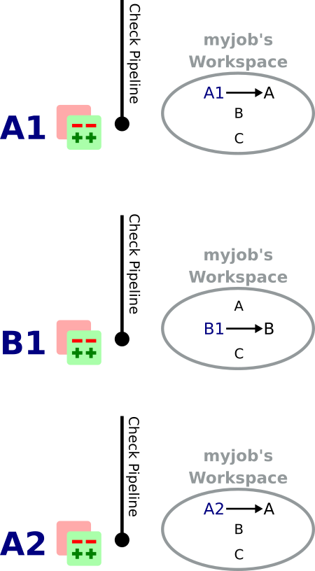

In this article, we will explain how project dependencies work in Zuul.
This article is part of the Zuul hands-on series.
The examples and commands that follow are intended to be run on a Software Factory sandbox where a demo-repo repository exists. You should have such an environment after following the previous articles in this series:
- To deploy a Software Factory sandbox please read the first article of the series.
- To create the demo-repo repository, please follow the sections Clone the config repository and Define the demo-repo repository sections.
Incidentally, most of the links reference sftests.com which is the default domain of the sandbox. Make sure to adapt the links if necessary.
If you have already deployed a Software Factory sandbox and created a snapshot as suggested, you can restore this snapshot in order to follow this article on a clean environment. In that case make sure the virtual machine's time is correct post restoration. If not fix it by running
systemctl stop ntpd; ntpd -gq; systemctl start ntpd
The Case for Cross-Project Testing
Software tends to be less and less monolithic, and even before that trend took off most software projects depended on third party libraries or external frameworks. Even from an architectural standpoint, it isn't rare to see projects split into functional subcomponents, like frontends, client libraries, or servers. And with the advent of containerized applications and micro-services, it becomes more and more complex to ensure that every cog in the system works well with the other.
Zuul was designed with dependency testing in mind, and can help a development team make sure that changes to any subcomponents won't break the whole project.
Zuul's Dependent Pipelines, extended
We've introduced the notion of dependent pipelines in Zuul in a previous article of the series. It's time to see how it can be used beyond speculative merging on a single project.
Independent Pipelines
When a pipeline is Independent, changes that land in that pipeline are tested independently from each other, meaning that the tests are not sharing a common workspace during testing. This is fine when doing preliminary validation, like in the check pipeline.
As an example, let's assume three projects A, B, C defined in Zuul; their check and gate pipelines are configured to execute a job called myjob which requires A, B and C.
Let's also assume three patches landing in the check pipeline in the following order:
- A1 on project A
- B1 on project B
- A2 on project A
myjob's respective workspaces will be:
In that case patches are tested independently and the builds can be run in parallel.
Dependent Pipelines
When a pipeline is Dependent, it means that it can define queues to which projects can be associated. All the patches of projects that belong to the same queue are tested together, in their order of landing in the pipeline; it means that they are included into each new workspace as patches get tested. Typically, gate-type pipelines should be defined as dependent in order to catch dependency problems before they get merged.
Let's now assume projects A, B and C belong to queue "abc" on the gate pipeline. When patches A1, B1 and A2 land in the gate pipeline in that order, this is what the respective workspaces for myjob will look like:
A Dependent pipeline will catch any problem introduced by incompatibilities brought by new patches.
Depends-On
What if a patch needs an unmerged dependency to pass the check pipeline? This can happen, for example, when an incoming patch on a client library expects an implementation of the server API that is still being reviewed. Independent pipelines allow cross-dependency testing as well by using the Depends-On keyword. By adding a line like:
Depends-On: path/to/patch
In the commit message or the Pull Request's description, you can make Zuul aware that a patch must be added to the workspace. Of course, this propagates to dependent pipelines as well.
This is a very powerful feature that allows developers to work on several components in parallel, regardless of how fast patches get merged. With any other CI system, developers would have to wait until the dependency gets merged before they can get feedback on their patch from the CI!
Zuul's Depends-On supports GitHub or Pagure Pull Requests URIs, Gerrit review URIs or Change-IDs, or any other git source defined in Zuul's configuration.
Let's test it
We will set up two Python projects:
- demo-repo, the main project
- demo-lib, a module demo-repo needs
Provision the demo-repo source code
As always, let's start with a fresh version of demo-repo. It is assumed that this project already exists; if not follow the instructions here.
Clone demo-repo and provision it with this demo code.
git clone -c http.sslVerify=false https://sftests.com/r/demo-repo
cd demo-repo
git rm -r *
git review -s # Enter admin as username
tar -xzf /tmp/hoz-4-demo-repo.tgz -C .
git add -A
git commit -m"Initialize demo-repo project"
git push gerrit
Define the demo-lib repository
From your host, clone the config repository and configure git review:
git clone -c http.sslVerify=false https://sftests.com/r/config
cd config
git review -s # Enter admin as username
Edit the resources/demo-project.yaml file to add the "demo-lib" project:
resources:
projects:
demo-project:
description: Demo project
source-repositories:
- demo-repo
- demo-lib
repos:
demo-repo:
description: A demo repository
acl: demo-acl
demo-lib:
description: A dependency for the demo repository
acl: demo-acl
acls:
demo-acl:
file: |
[access "refs/*"]
read = group config-core
owner = group config-ptl
[access "refs/heads/*"]
label-Code-Review = -2..+2 group config-core
label-Code-Review = -2..+2 group config-ptl
label-Verified = -2..+2 group config-ptl
label-Workflow = -1..+1 group config-core
label-Workflow = -1..+1 group config-ptl
label-Workflow = -1..+0 group Registered Users
submit = group config-ptl
read = group config-core
read = group Registered Users
[access "refs/meta/config"]
read = group config-core
read = group Registered Users
[receive]
requireChangeId = true
[submit]
mergeContent = false
action = merge if necessary
groups:
- config-ptl
- config-core
Run git review to send the patch on Gerrit:
git add resources/demo-project.yaml
git commit -m"Add demo-lib repo"
git review
As admin, approve the patch on sftests.com's Gerrit UI.
Once the changes have been applied, clone demo-lib and provision it with this code .
git clone -c http.sslVerify=false https://sftests.com/r/demo-lib
cd demo-lib
git rm -r *
git review -s # Enter admin as username
tar -xzf /tmp/hoz-7-demolib-repo.tgz -C .
git add -A
git commit -m"Initialize demo-lib project"
git push gerrit
Define initial CI on the projects
We will add some simple tox validation using the Zuul jobs library.
Create the following .zuul.yaml file in demo-lib and demo-repo:
- project:
check:
jobs:
- tox-py27
- tox-pep8
gate:
jobs:
- tox-py27
- tox-pep8
For each project, commit the file and create a review:
git add -A
git commit -m"Initialize CI"
git review
Make sure the patches pass the CI, and approve them from Gerrit's UI.
Add the dependency relationship between demo-lib and demo-repo
Let's make the demo-repo project able to import the demolib module. In the demo-repo project:
- Edit requirements.txt:
nose
git+https://sftests.com/r/demo-lib.git
- Edit tox.ini:
[tox]
envlist = pep8,py27
[testenv]
deps = -rrequirements.txt
commands = nosetests -v
setenv =
GIT_SSL_NO_VERIFY=false
[testenv:pep8]
deps = flake8
commands = flake8
- Edit hello/hello.py:
from demolib import hello
class Hello():
def run(self):
return hello()
if __name__ == "__main__":
print(Hello().run())
Commit all and create a review:
git add -A
git commit -m"Import demolib"
git review
Make sure the change passes the CI, and approve it from Gerrit's UI.
Define a dependent job
Since we want demo-repo to depend on demo-lib, we want to make sure changes on demo-lib will not break demo-repo. In our case, that means we want to run the unit tests with tox on demo-repo whenever a new patch is submitted on demo-repo, or on demo-lib.
In order to do this, let's add a new job definition in demo-repo's .zuul.yaml:
- job:
name: tox-demorepo
description: tox test for demo-repo with dependencies
parent: tox-py27
required-projects:
- demo-repo
- demo-lib
vars:
zuul_work_dir: "{{ zuul.projects['sftests.com/demo-repo'].src_dir }}"
- project:
check:
jobs:
- tox-demorepo
- tox-pep8
gate:
jobs:
- tox-demorepo
- tox-pep8
Let's break the new job down a bit:
- parent: the job inherits from the existing tox-py27 job. We can do this because the tox-* jobs from Zuul's library were written with dependency support in mind; we just have to specify which projects must be in the workspace.
- required-projects: this is simply the list of projects we must include in the workspace.
- vars.zuul_work_dir: we override Zuul's working directory, so that the tox tests are always run for demo-repo regardless of which project triggers this job. By default, zuul_work_dir would be the path to the project for which the job was triggered. We'll explain the new value below.
Commit all, and upload a review:
git add -A
git commit -m"Add dependent job"
git review
Wait until the check pipeline completes, and let's take a closer look at what is happening. First, let's have a look at the Ansible variables that were set by Zuul for this job: go to https://sftests.com/zuul/t/local/builds and click on the last successful build of tox-demorepo (it should be in the first or second row of the table), then click the log url and zuul-info, then inventory.yaml. Have a look at the zuul object:
zuul:
_inheritance_path:
- '<Job base branches: None source: config/zuul.d/_jobs-base.yaml@master#3>'
- '<Job unittests branches: None source: zuul-jobs/zuul.yaml@master#4>'
- '<Job tox branches: None source: zuul-jobs/zuul.yaml@master#15>'
- '<Job tox-py27 branches: None source: zuul-jobs/zuul.yaml@master#58>'
- '<Job tox-demorepo branches: None source: demo-repo/.zuul.yaml@master#1>'
- '<Job tox-demorepo branches: None source: demo-repo/.zuul.yaml@master#11>'
branch: master
build: fa9996bbdab64e69838d300c8ac0a58d
buildset: 75fc274cc856422b92e5ac9f87b1ca7a
change: '14'
change_url: https://sftests.com/r/14
child_jobs: []
executor:
hostname: managesf.sftests.com
[...]
items:
- branch: master
change: '14'
change_url: https://sftests.com/r/14
patchset: '1'
project:
canonical_hostname: sftests.com
canonical_name: sftests.com/demo-repo
name: demo-repo
short_name: demo-repo
src_dir: src/sftests.com/demo-repo
job: tox-demorepo
jobtags: []
message: QWRkIGRlcGVuZGVudCBqb2IKCkNoYW5nZS1JZDogSTc0MWE5YjU2ZWIzYTcxYWIzNTBmOWU0OTczODgxN2FjZTg0NWM2NDEK
patchset: '1'
pipeline: check
project:
canonical_hostname: sftests.com
canonical_name: sftests.com/demo-repo
name: demo-repo
short_name: demo-repo
src_dir: src/sftests.com/demo-repo
projects:
sftests.com/demo-lib:
canonical_hostname: sftests.com
canonical_name: sftests.com/demo-lib
checkout: master
name: demo-lib
required: true
short_name: demo-lib
src_dir: src/sftests.com/demo-lib
sftests.com/demo-repo:
canonical_hostname: sftests.com
canonical_name: sftests.com/demo-repo
checkout: master
name: demo-repo
required: true
short_name: demo-repo
src_dir: src/sftests.com/demo-repo
ref: refs/changes/14/14/1
resources: {}
tenant: local
timeout: 1800
voting: true
zuul_work_dir: '{{ zuul.projects[''sftests.com/demo-repo''].src_dir }}'
zuul.projects is a dictionary of all the required projects we declared in the job's definition. For each required project, the path to the checked out code is in src_dir. These variables are available at the job's level, meaning that you can write your playbooks using these. This should also explain the specific value we chose for zuul_work_dir.
Finally, make sure the change passes the CI, and approve it from Gerrit's UI.
Add tox-demorepo to demo-lib's CI
Edit .zuul.yaml in demo-lib:
- project:
check:
jobs:
- tox-py27
- tox-demorepo
- tox-pep8
gate:
jobs:
- tox-py27
- tox-demorepo
- tox-pep8
Note that here, we want to keep testing demo-lib as an isolated module; which is why we're keeping the tox-py27 job. Also, jobs are shared globally within a Zuul project, which is why we can reuse tox-demorepo from demo-repo.
As usual, commit, review and approve on Gerrit:
git add -A
git commit -m"Add dependent job in demo-lib CI"
git review
Scenario 1: Catch problems with dependencies early on
In this scenario we will create a patch on demo-lib that breaks demo-repo.
Create a new branch on demo-lib:
git checkout -b uhoh
Edit demolib/__init__.py:
def hello():
return "Hello Dana"
Edit tests/test_demolib.py:
import unittest
from demolib import hello
class TestHello(unittest.TestCase):
def test_hello(self):
self.assertEqual(hello(), 'Hello Dana')
Commit and upload for review:
git add -A
git commit -m"No Zuul, only Dana"
git review
Wait a few minutes, and you should see the following CI results from the check pipeline:
Even though this patch passes demo-lib's unit tests, we can see with tox-demorepo that this patch would break demo-repo at the current state of the master branch.
Scenario 2: using Depends-On
In this scenario we will create a patch on demo-repo that requires another patch on demo-lib.
First, let's add a function to demo-lib. Create a new branch on the demo-lib repo:
git checkout master && git pull origin master && git checkout -b goodbye
Edit demolib/__init__.py:
def hello(): return "Hello Zuul" def goodbye(): return "Bye Zuul"
Commit and upload for review:
git add -A
git commit -m"Bye Zuul"
git review
We won't merge this yet. But take note of the URL of the patch in Gerrit; it should be something like https://sftests.com/r/#/c/{patch_number} (in my case it is https://sftests.com/r/#/c/17 )
Now let's create a patch in demo-repo to use our new function. Create a new branch on demo-repo:
git checkout master && git pull origin master && git checkout -b goodbye
Edit hello/hello.py:
from demolib import hello, goodbye
class Hello():
def run(self):
return hello()
def bye(self):
return goodbye()
if __name__ == "__main__":
print(Hello().run())
Commit and upload for review:
git add -A
git commit -m"Bye Zuul"
git review
The check pipeline will return a failure, since we're using a version of demo-lib that wasn't merged yet. Indeed, in the logs for the tox-demorepo job, we see:
Let's amend our commit message to specify the unmerged dependency we need:
git commit --amend
Add the line Depends-On: https://sftests.com/r/#/c/{patch_number} to the commit message, where {patch_number} is the number of the unmerged patch on demo-lib.
Upload for review:
git review
The check pipeline will show the dependency:

This time the tests pass; we effectively managed to validate a change before its dependency was merged.
As exercises left to the reader:
- try and see what happens when you attempt to approve the patch on demo-repo without approving the dependency on demo-lib first;
- approve the patch on demo-lib then the one on demo-repo in rapid succession, and observe the gate pipeline.
Conclusion
In this article we've learned how Zuul can handle dependencies between projects, so that side effects can be detected early. It can also be used to speed up the development of features, as patches can use unmerged dependencies in their workspace.
In a nutshell:
- Dependencies can be declared at job level with the required-projects directive.
- You can also explicitly declare a dependency with the Depends-On magic keyword in the commit message, or the Pull Request description.
- Zuul provides an ansible variable called zuul.projects with information about the dependencies that are checked out by Zuul. That variable can be used in your jobs playbooks to perform actions on dependencies (installation, etc).
You should know enough by now to set up your own dependency-aware CI with Zuul. So happy testing !